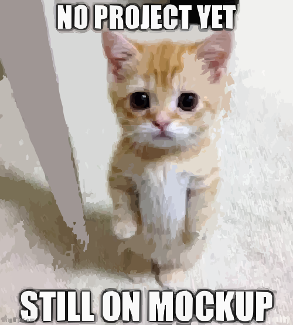

About Me
I’m Anthony, an autistic PWD passionate about technology. I have experience with Java, Spring Boot, and Python using Manim. Currently studying Kotlin and attending the Systems Analysis and Development course at Universidade Potiguar since 2024.
Education
- 🔹 Computational Solutions Programming – 07/04/2024
- 🔹 Software Modeling – 07/04/2024
- 🔹 Computational Systems and Security – 12/18/2024
- 🔹 Computational Environments and Connectivity (Cisco) – 12/18/2024
Projects
🎮 Platformer Game
A platform game developed with JavaFX during my initial Java studies.
🏦 Banking System
Desktop application in Java with Swing simulating basic banking operations.
📚 Virtual Library
Web system created with Spring Boot and Thymeleaf, integrated with the OpenLibrary API.
🤗 HugMeBot
Discord bot in development to manage donations via PIX and credit/debit cards, automatically assigning roles to supporters. Backend built with Python, FastAPI, and PostgreSQL.
🐋 Deepseek-CLI
Command-line assistant to interact with the DeepSeek API. Allows loading projects and answering intelligent questions directly from the terminal.
📖 "Livrai-me"
Contact
📧 Email: anthonyluciano.dev@gmail.com
🐙 GitHub: github.com/AnthonyLuciano
💼 LinkedIn: linkedin.com/in/anthony-luciano-dev/